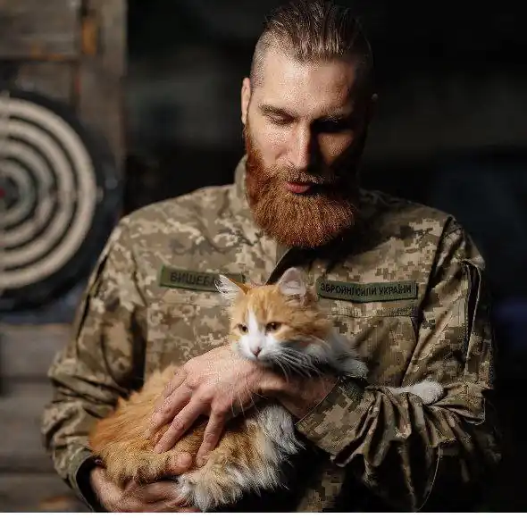

Павло Вишебаба — український письменник, поет, музикант, еко-активіст та військовий, очільник громадської організації "Єдина Планета".
Народився 28 березня 1986 року у Краматорську, навчався у Донбаський машинобудівній академії, проте після третього курсу вирішив змінити навчальний заклад та вступив до Маріупольського державного університету, в якому вивчав журналістику.
Після закінчення навчання переїхав до Києва, з 24 лютого 2022 року боронить Україну у складі 68-ї окремої єгерської бригади імені Олекси Довбуша. Павло Вишебаба публікувався у збірках "Про що він мовчить", "Війна 2022. Щоденники, есеї, поезія", "Незламній / For Invincible", "Поміж сирен. Нові вірші війни", "Соняховий Лев / The Sunflower Lion" та "Книга Love 2.0. Любов і війна". Дебютна власна збірка віршів "Тільки не пиши мені про війну" Павла Вишебаби побачила світ у грудні 2022 року, та відразу стала українським бестселером. Книги Павла Вишебаби привертають увагу не лише українських читачів, але й стали відомими за межами країни, адже вірші автора стали голосом часу.